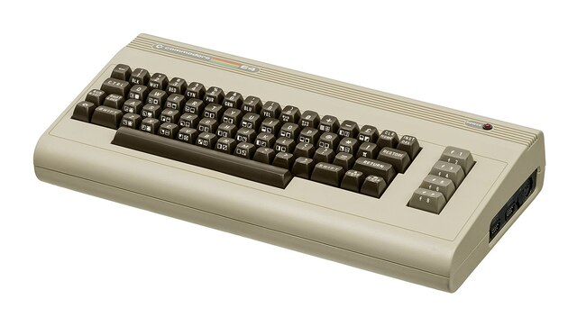
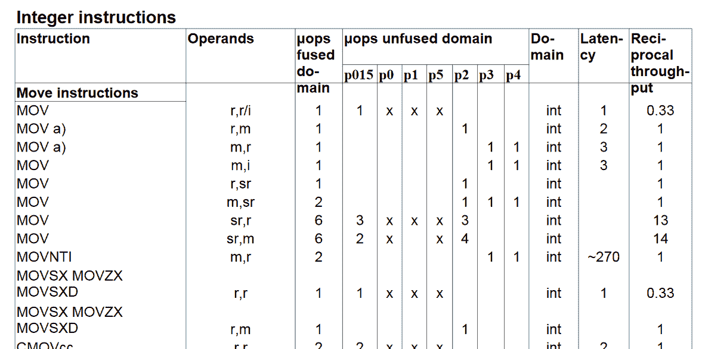

Maurizio Tomasi
Università degli Studi di Milano
g++ e clang++ convertono il C++ in linguaggio macchina.Attraverso identificativi come ebp, rsp, eax… (interi), xmm0, xmm1, … (floating point)
Esclusiva pertinenza della CPU!
RAM: la CPU richiede il dato al bus della memoria specificando l’indirizzo numerico
| Registri (6 kB) | ||
| RAM (8 GB) | ||
| HD SSD da 1 TB |
goto)for2 * x + y)new e deleteIn passato, per molti computer era necessario programmare direttamente in Assembler. Solo pochi pionieri offrivano linguaggi ad alto livello, come il Commodore 64:

Ma già dagli anni ’50 si erano sviluppati linguaggi ad alto livello, come Lisp e Fortran
for in cicli che usano gotogcc e clang, esiste il flag -Sfor| C++ | Assembler (x86_64) |
Per ogni dato, il compilatore deve decidere se usare un registro o la RAM
Trovare la scelta ottimale è molto difficile (vedi Wikipedia)
In passato il C/C++ offriva la parola chiave register (oggi deprecata):
int julia(double startx, double starty, double cx, double cy, int max_iter = 1024) {
int iter = 0;
double zx = startx, zy = starty;
while ((zx * zx + zy * zy < 4) && (iter < max_iter)) {
double tmp = zx * zx - zy * zy;
zy = 2 * zx * zy + cy;
zx = tmp + cx;
iter++;
}
return (iter == max_iter) ? -1 : iter;
}(Evitiamo di usare #include <complex> perché così è più semplice capire il codice assembler).
-O0)| C++ | Assembler |
Con -O2 il codice si complica, perché il compilatore cerca di usare più i registri, come xmm0, che gli accessi alla memoria RAM, come [rbp-16].

| Flag | Tempo |
|---|---|
-O0 |
0.23 s |
-O1 |
0.13 s |
-O2 |
0.11 s |
-O3 |
0.11 s |
g++ si basa su GCC, che implementa una serie di algoritmi per capire quale sia il modo più performante di usare i registri e ordinare le istruzioniclang si basa sulla libreria LLVM, che prende in input una descrizione «ad alto livello» della sequenza di operazioni da eseguire e le traduce in codice assembler ottimizzatogcc), D (gdc), Go (gccgo), Fortran (gfortran), Ada (gnat).